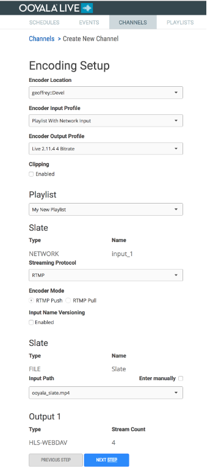
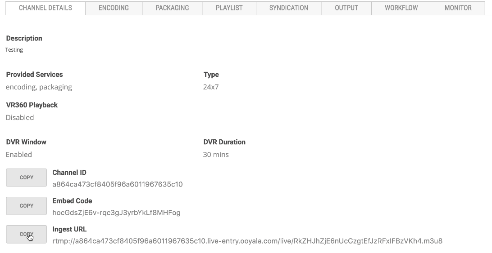
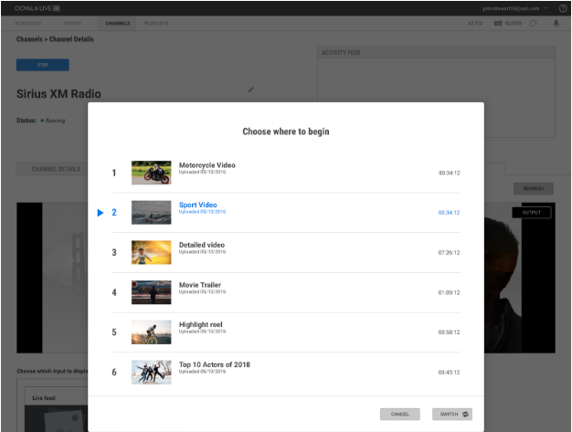

Ooyala Live’s Linear VOD Playlist makes it possible to jump from Live streaming into a VOD playlist and back to Live streaming. Now, when you create a channel, you can add network input (live feed), a backup slate of your choice, and additionally, a playlist that you have created already.
In the Encoding Setup page, set the Encoder Input Profile to Playlist with Network Input:
Choose from the available playlists, and then choose whatever slate you want to pair with the playlist. You can only chose a playlist that is not already associated with another channel. Once the channel has been created, the channel details should include an ingest URL. This URL must be entered on the source encoder in order to be able to stream content.
Click SWITCH on the playlist tile to switch output to that playlist. You can either choose the next playlist asset, as displayed, or click “Switch and set starting video” to choose a different asset:
The playlist now plays instead of the Live feed. Each video asset in turn plays until the last in the playlist, with a thumbnail of the next video to be played displayed in the Playlist tile. Each playlist asset has a specific ID, which determines its play order. Once the playlist has finished, it automatically restarts from the top asset in the list.